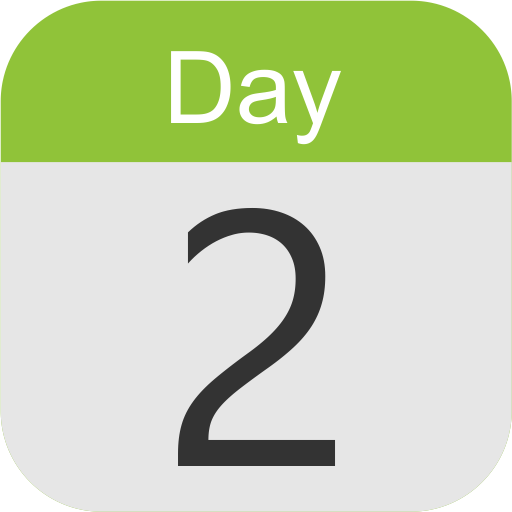
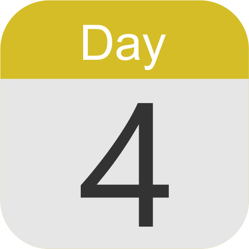
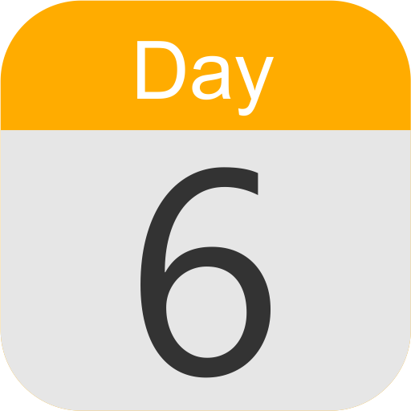
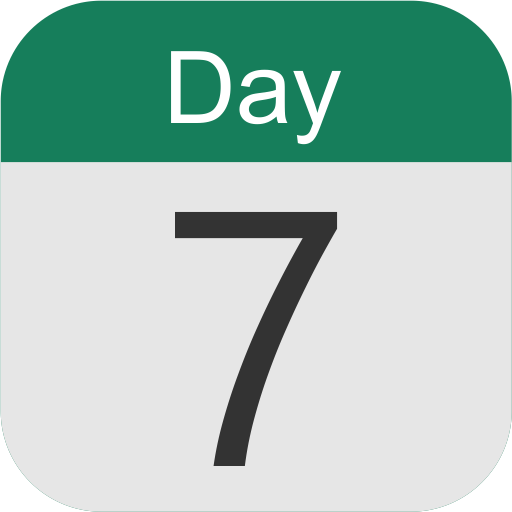

Hafalan Surat Yasin
Ayat 1-12

Hafalan Surat Yasin
Ayat 13-23
Hafalan Surat Yasin
Ayat 24-36

Hafalan Surat Yasin
Ayat 37-47
Hafalan Surat Yasin
Ayat 48-59

Hafalan Surat Yasin
Ayat 60-71

Hafalan Surat Yasin
Ayat 72-83
Hafalan Surat Yasin (Day 1-7)
Ayat 1-83
Beranda